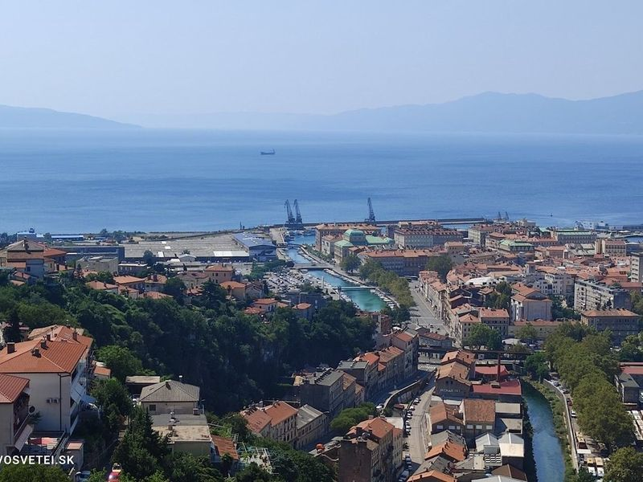
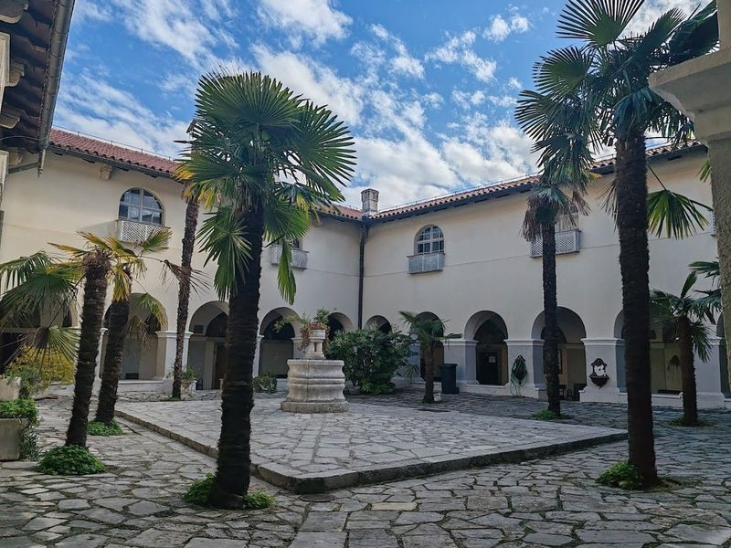
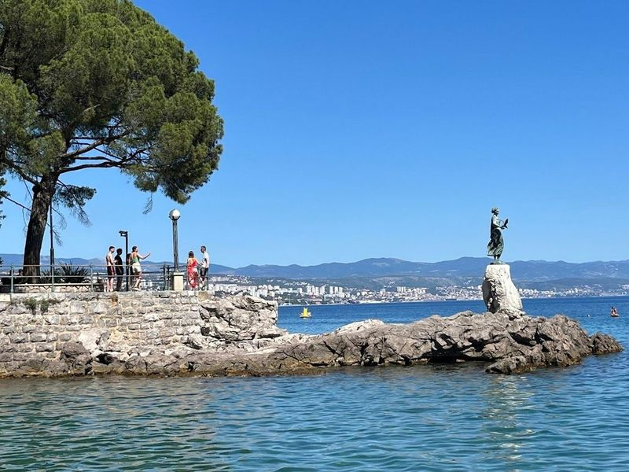
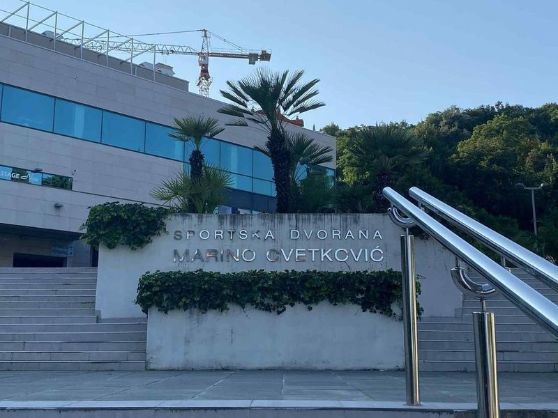
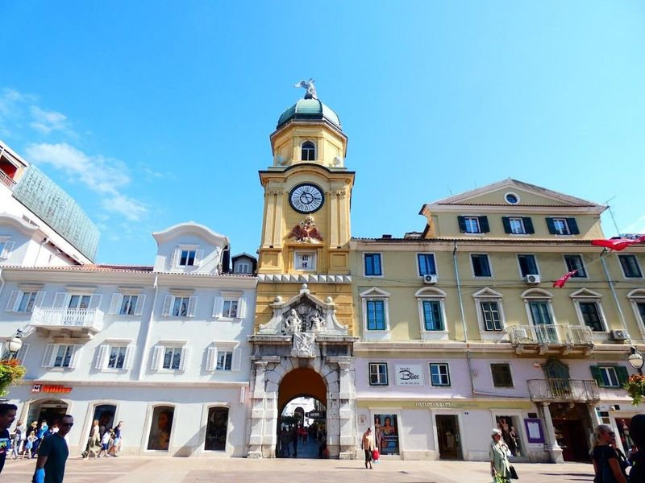
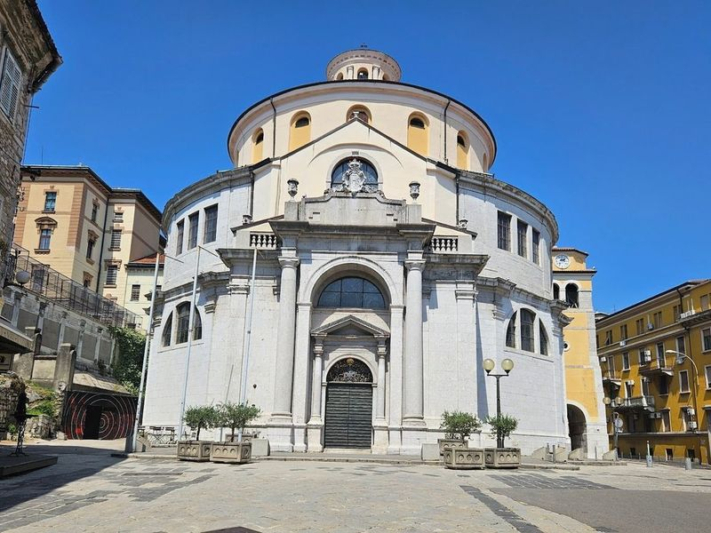
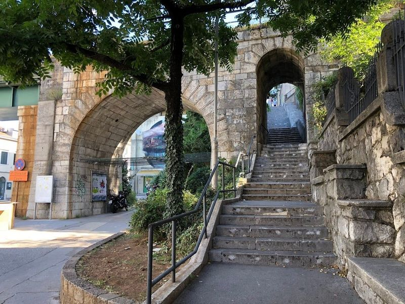
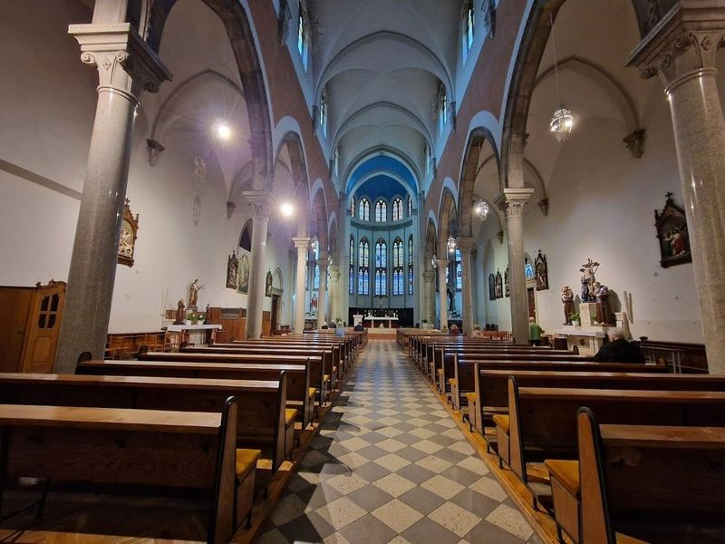
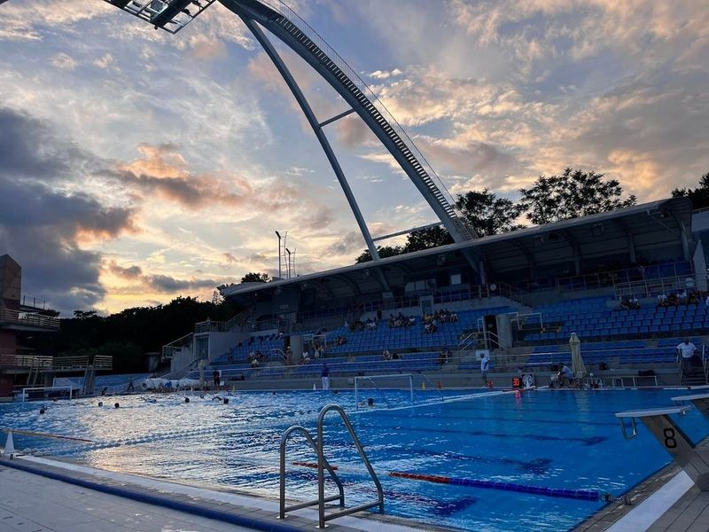
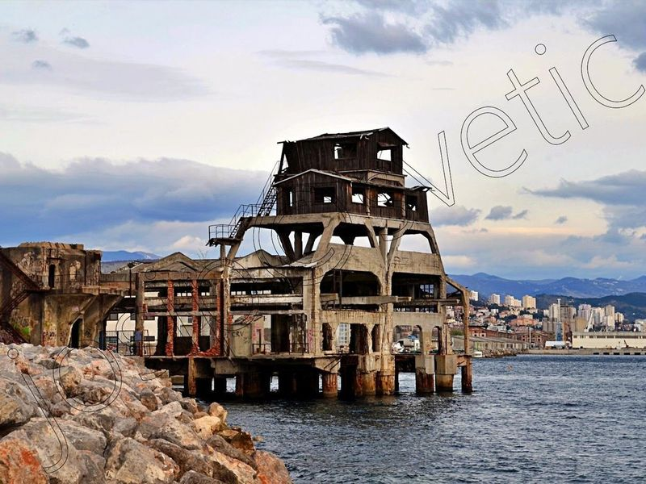

Explore Rijeka
A Brief History
Rijeka developed around a deep Adriatic inlet that Romans called Tarsatica and that Habsburg emperors later made their principal naval outlet to the sea. Hungarian-Croatian corpus separatum status after 1868 brought rail links, shipyards, and a cosmopolitan port where Italian, Croatian, and Hungarian communities competed. Twentieth-century border changes, the Free State of Fiume episode, and Yugoslav then Croatian rule reshaped institutions while Korzo promenade and Trsat hill churches frame the harbour.
Attractions Map
Top Sights & Activities

Trsat Castle
Trsat Castle, located on a steep hill next to the Rjecina Gorge, has been a strategic lookout point since ancient times. The castle has a rich history dating back to the Ilyrians and has changed hands between various empires. To reach the castle, travellers can climb a grand staircase offering views.

Shrine of Mary of God of Trsat
The Church of Mary of God of Trsat is a renowned pilgrimage site located near Trsat Castle in Western Croatia. travellers can climb over 500 stairs to reach the church, where they will be greeted by a refreshing Nasoni water fountain and surroundings. The church, known for its late Gothic architecture and Baroque renovations, houses a painting of Mary donated by the Pope in 1397.

Maiden with the Seagull
Maiden with the Seagull is an statue located in Opatija, Croatia, symbolizing the region's natural beauty and cultural heritage. Erected in 1956, this picturesque coastal town offers a unique experience with architecture, promenades, and views of the Adriatic Sea.

Sports hall Marino Cvetkovic
Sports Hall Marino Cvetkovic is a spacious facility covering 11,000 square meters. It features a large sports ground that can be adjusted for various activities, along with a smaller sports ground. The hall offers numerous amenities including reception, locker rooms, meeting rooms, restaurant, VIP terrace, medical office, and wellness center. Additionally, there's an outdoor public square and a parking garage with ample space.

City Clock Tower
The City Clock Tower, also known as Gradski Toranj or Pod uriloj, stands as a historic landmark in Rijeka. Originally serving as the gateway to the city from the port during medieval times, it was transformed into a tower by architect Filbert Bazarig in the late 1700s following an earthquake that devastated much of the town. Despite its conversion, Bazarig ensured that the original entrance arch remained intact.

Rijeka Tunnel
Rijeka Tunnel, originally constructed for military purposes and protection against aerial attacks, is now open to tourists. This 330-meter-long tunnel can be accessed near the Sveti Vid church or concealed behind the Dolac elementary school. Rijeka, Croatia's third-largest city and busiest port, often goes unnoticed by travelers in favor of more popular coastal destinations.

Petar Kružić Stairway
Petar Kružić Stairway, located near the Rjecina River in the city center, is a historic pilgrimage route leading to the Church of Lady Trsat at the top of the hill. Built in 1531, this stairway consists of over 500 steps and offers views of Rijeka and its harbor. While it can be quite a challenge, especially during summer, reaching the top rewards travellers with panoramas.

Church of Our Lady of Lourdes
The Church of Our Lady of Lourdes is a neo-Gothic basilica located opposite the large bus station in Rijeka. It was constructed between 1904 and 1929, featuring a remarkable red and white facade adorned with intricate ornamentation in the Lombard style. Although originally planned, the addition of a bell tower never came to fruition. The church overlooks the bus station and is an ideal starting point for exploring Rijeka.

Kantrida Swimming Pools
If 're looking to mix some exercise into Rijeka adventure, the Kantrida Swimming Pools are a fantastic option. along the Adriatic coastline, this modern facility boasts both indoor and outdoor Olympic-sized pools, a diving pool, and even a kids' area. The architectural design is impressive, featuring a retractable roof that allows for views of Kvarner Bay while swim. The atmosphere is welcoming with friendly staff ready to assist during visit.

Torpedo - Launch Station
Petar Kružić Stairway, located near the Rjecina River in the city center, is a historic pilgrimage route leading to the Church of Lady Trsat at the top of the hill. Built in 1531, this stairway consists of over 500 steps and offers views of Rijeka and its harbor. While it can be quite a challenge, especially during summer, reaching the top rewards travellers with panoramas.